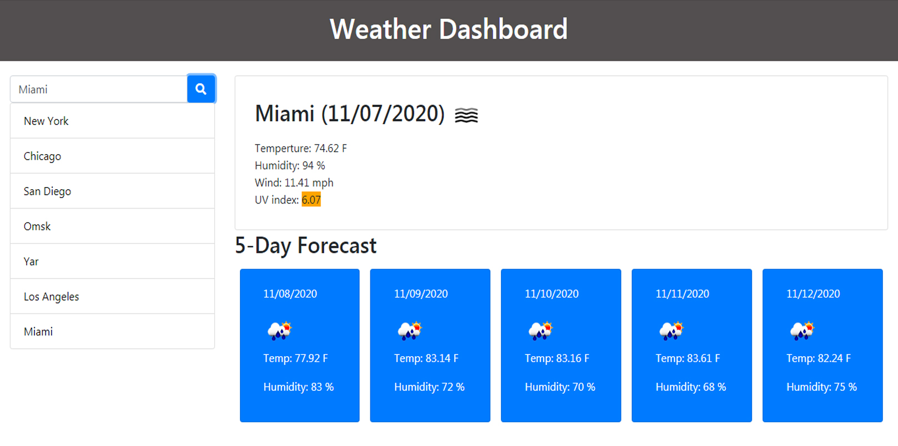
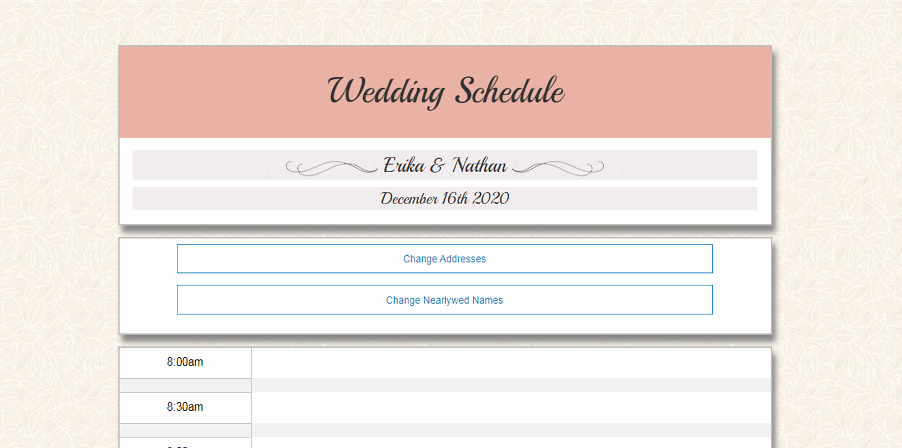
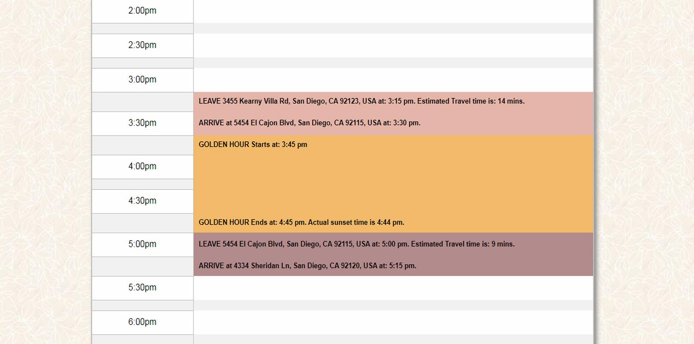
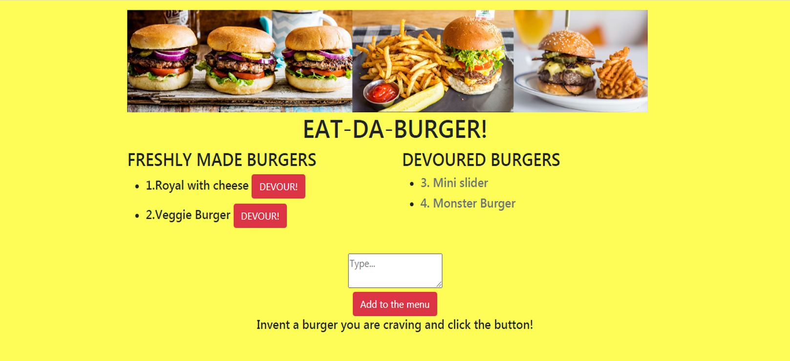

Portfolio
Weather Forecast App
Deployed applicationGitHub repository

Weather forecast application that allows the user to check
the weather information all around the world, such as
temperature, humidity, UV index and same parameters for the
next five days. The application has to save the search
history and present the last requested city's weather, using
local storage, JSON, jQuery, HTML, CSS, APIs, Ajax calls
Role:
sole developer.
Wedding Scheduler App
Deployed applicationGitHub repository
 
Wedding day scheduler that prioritizing golden hour and
dynamically generating a color-coded schedule. When the user
enters the date of the event, the ceremony location, the
photo shoot location, and the reception destination, the app
calculates and displays: The travel time from the ceremony
to the photo shoot location; Golden hour; and The travel
time from the photo shoot location to the reception
location. Utilizes local storage, JSON, jQuery, HTML, CSS,
APIs, Ajax calls.
Role: collaborated on developing
JavaScript, HTML and CSS structure.
Wedding Scheduler App
Deployed applicationGitHub repository

This application keeps track of items(burgers) that user inputs and then consumes. The code is organized according to the standarts of MVC framework. Utilizes JavaScript, SQL, jQuery, HTML, CSS,
API requests, ORM, Ajax calls, Express.js and Node.js.
Role: sole developer